ASLM/CTASLM Baseplate Assembly & Alignment
Available Configurations
The current iteration of the baseplate provides 5 different possible imaging configurations: 2 using a cylindrical lens to form the light sheet (ASLM, CT-ASLM), and 3 using a Powell lens to form the light sheet (SPIM, ASLM, CT-ASLM). Our primary focus in this section will be the construction and alignment of the Powell lens configurations, but the cylindrical configurations will follow a similar process.


Breakdown of Baseplate Holes
Here we show a breakdown of all the holes on the baseplate in terms of what configuration they’re designed for (Figure 1), the post height corresponding to those holes (Figure 1), and the elements corresponding to each hole (Figure 2). It should be noted that we include a couple additional holes on the baseplate for alternative component mounting schemes (Figure 2). Figure 2 also shows the orientation that each of the lenses should be in within the setup, where for the TTL tube lenses the orientation is shown based on the direction of the TTL labeling on the lenses themselves.
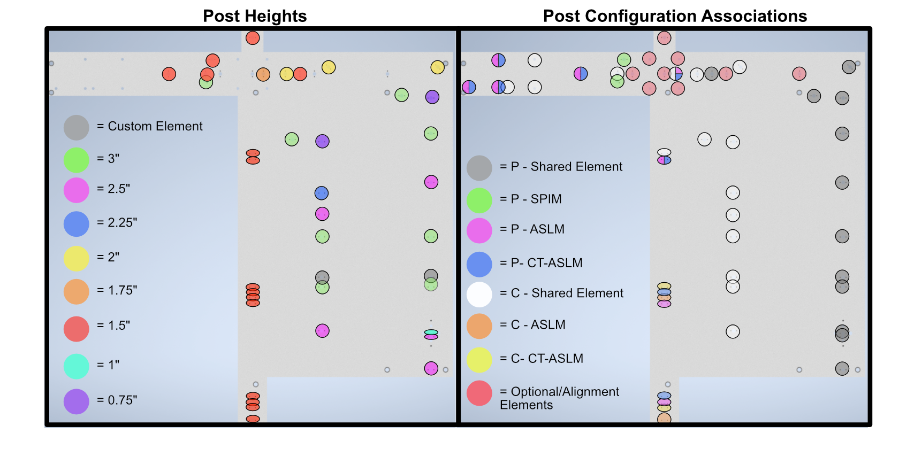
Figure 1: Labeled baseplate holes based on post height (left) and configuration (right)
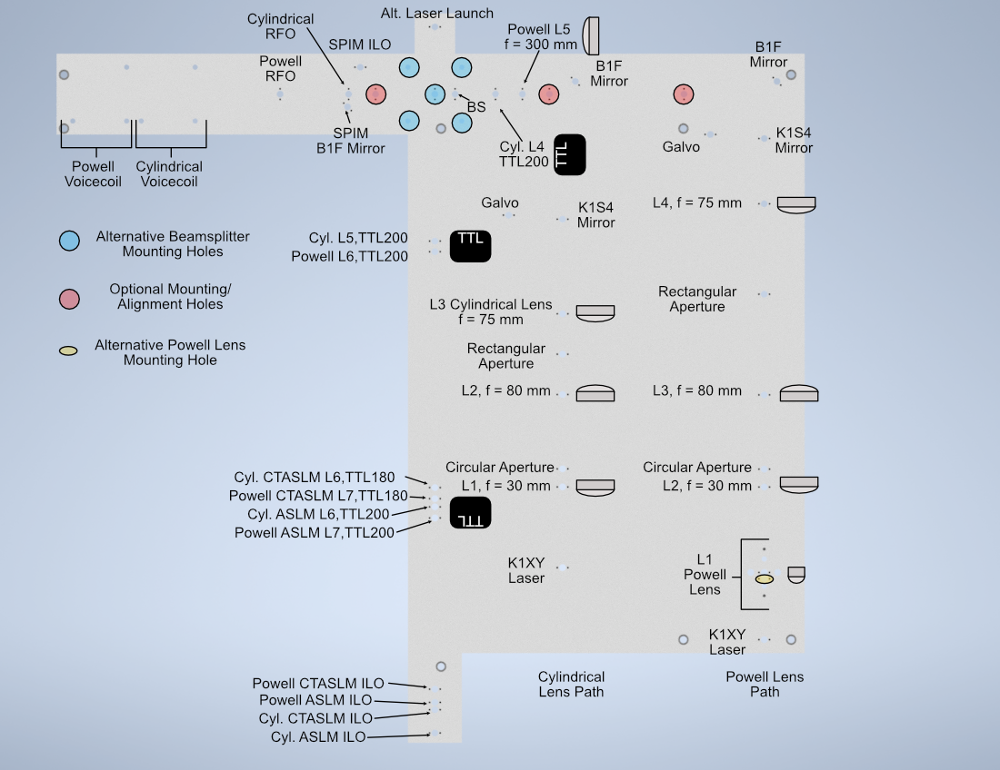
Figure 2: Labeled baseplate holes based on what component is placed at each hole
Assembly
Assembly Overview
For the second iteration of our Altair baseplate system, the construction and alignment process is more involved than our first iteration, but should still be a straightforward step-by-step process.
Powell Lens Assembly
Our newest illumination path configurations utilize a Powell lens as the element that forms the light sheet profile itself instead of a cylindrical lens. Our mounting scheme for the Powell lens offers control over all 3 axes (x, y, and z), where the Polaris 1XY Mount covers x and y and the LNR25M covers z. We found that outside of the Polaris 1XY for centering the Powell lens precisely on the beam, due to tolerances of the Powell lens from Laserline, we also needed to adjust the distance between the Powell lens and L2 to have our physical system align with our simulations.
Step 1: Fixing the Powell lens into the AD9F Mount
For the first step, get a piece of optical tissue paper and the AD9F and Powell lens. Place the flat face of the Powell lens onto the tissue paper, and then place the AD9F onto the Powell lens such that the front surface of the smaller side of the AD9F is flush with the flat face of the Powell lens. Use the two mounting screws on the AD9F to secure the lens in place.
Step 2: Install the LRM1 rotation Mount into the Polaris 1XY
Screw the threaded portion of the LRM1 into the threaded hole on the Polaris 1XY until the back surface of the LRM1 is flush with the front of the 1XY.
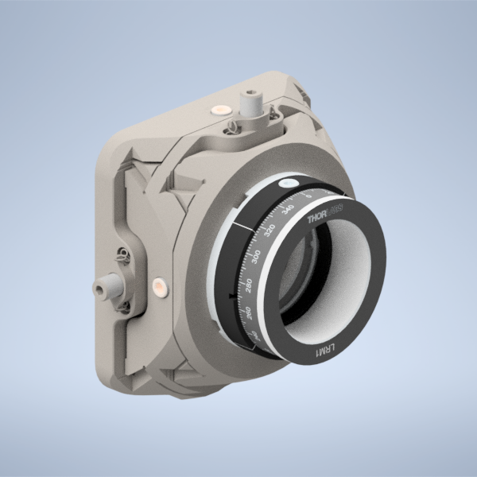
Figure 1: Screwing the LRM1 into the 1XY
Step 3: Install the LNR25M onto the Baseplate
There are a variety of holes on the baseplate that one can use to fix the LNR25M in place. In the graphic below, the two holes in red on the top of the LNR25M allow you to thread 1/4-20 screws directly through the LNR25M into the threaded holes on the baseplate below. There are also two 3 mm-diameter dowel pins on the bottom of the LNR25M that have corresponding holes on the baseplate in blue. Finally, there are three holes on the baseplate in yellow that correspond to threaded holes on the bottom of the LNR25M, 1/4-20 screws can be used to secure the LNR25M through these holes the same way that one would fix the other Polaris posts on the baseplate in place.
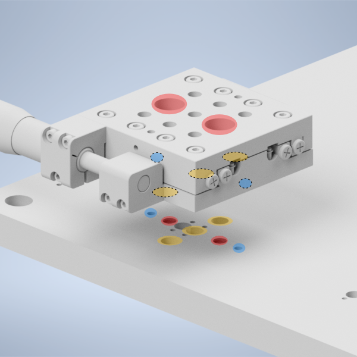
Figure 2: placing the LNR25M onto the baseplate
Step 4: Fix the 1” Polaris Post onto the LNR25M to Polaris adapter
Then take the LNR25M to Polaris adapter and using the same 2 mm dowel pins and 1/4-20 screws that the other Polaris posts in the system use, fix the 1” Polaris post onto the adapter by screwing in a 1/4-20 screw from the bottom of the adapter into the post.
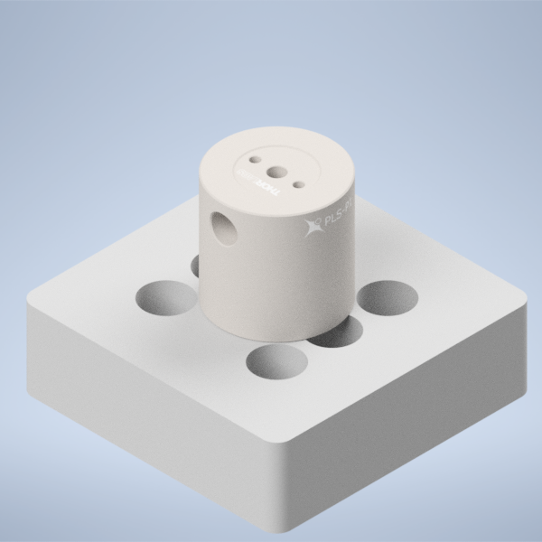
Figure 3: placing the 1” Polaris Post onto the LNR25M Adapter
Step 5: Install the LNR25M to Polaris adapter onto the LNR25M
Then using the four holes on the top of the adapter surrounding the 1” post, place 1/4-20 screws in those holes and screw them into the top of the LNR25M
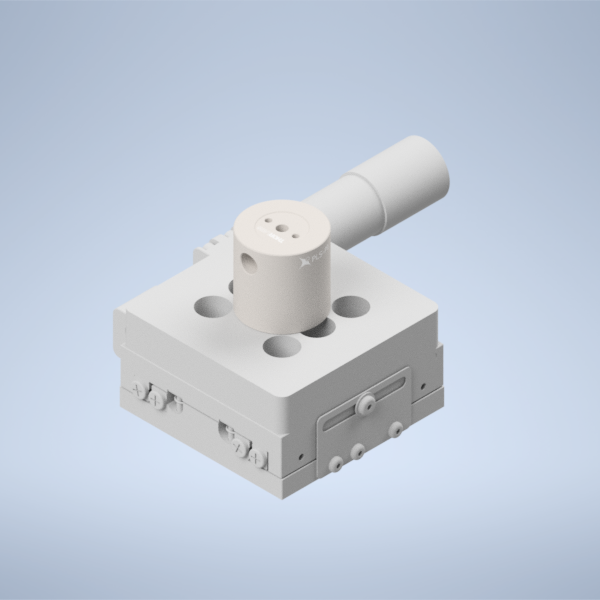
Figure 4: placing the LNR25M Adapter onto the LNR25
Step 6: Fix the Polaris 1XY onto the 1” Polaris post
Using an 8-32 screw and the 2 mm dowel pins, fix the Polaris 1XY onto the top of the 1” Polaris post assembly.

Figure 5: Fixing the Polaris 1XY onto the 1” Polaris Post
Step 7: Screw in the AD9F into the LRM1 mount until it’s fully threaded
Finally, screw in the AD9F fully into the LRM1 mount threading.
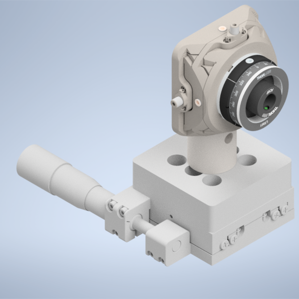
Figure 6: Threading the AD9F into the LRM1 mount
Voicecoil Assembly
Step 1: Fixing the mirror into the voicecoil
Start by taking a 0.5” mirror and fixing it into the central hole on our voicecoil using UV-cured resin adhesive. Apply a thin layer of liquid resin to the back of the mirror, and place the mirror in the central voicecoil hole. Then using a UV flashlight, cure the resin to secure the mirror in place.

Figure 1: Placing the mirror into the voicecoil hole
Step 2: Secure the PY004 onto the baseplate
Depending on if you’re planning on the cylindrical or the Powell lens illumination paths, there will be a different set of threaded holes to fix the PY004 onto the baseplate with, highlighted in the image below. The large 3-hole pattern on the top of the PY004 should align directly with the three threaded holes on the baseplate. Screw 1/4” screws into these holes to secure the PY004 in place.

Figure 2: Location of the holes used to secure the PY004 onto the baseplate depending on if you’re doing an Powell or cylindrical lens system
Step 3: Secure the voicecoil to PY004 adapter onto the PY004
Using 1/4” screws in the 4 holes on the adapter, tighten the screws until the adapter is secured in place onto the PY004.

Figure 3: Placement of the voicecoil adapter on the PY004
Step 4: Secure the voicecoil to the adapter using the front screw holes
Using 8/32” screws, secure the voicecoil onto the front of the adapter using the two thru-holes on the front of the adapter.

Figure 4: Completed voicecoil assembly
Voice Coil Mirror Setup with Tiger Controller
The voice coil mirror is driven by an analog waveform generated by the Tiger Controller DAC card.
To achieve stable imaging:
The signal must be wired correctly to the servo amplifier.
The internal low-pass filter on the TGDAC must be enabled.
When configured properly, the mirror will move smoothly without visible oscillation or image blur.
1. Wiring the Servo Amplifier
The servo amplifier has two command input terminals, operated in a differential mode:
Pin 1:
+CmdPin 2:
-Cmd
These are shown in the servo amplifier manual.
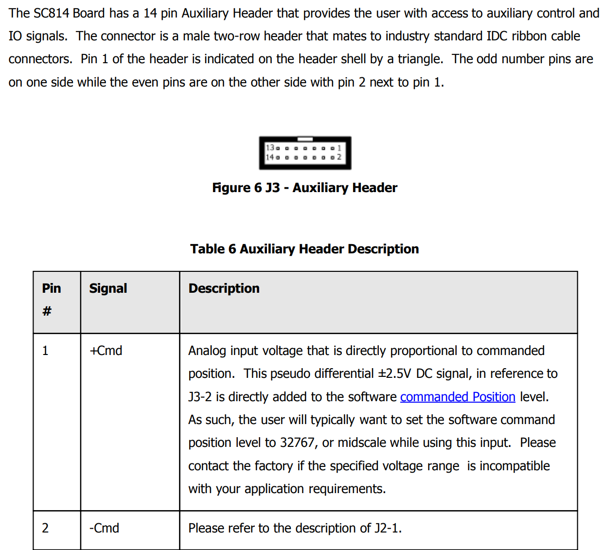
Location of +Cmd and -Cmd terminals in the servo manual.
Connections
Two single-ended outputs from the Tiger DAC are used:
DAC Output 1 → Control Signal
Unused DAC Output → Reference
Connect as follows:
Tiger Output |
Connect To Servo |
|---|---|
DAC Axis 1 (Signal) |
Pin 1: |
DAC Axis 3 (Reference) |
Pin 2: |
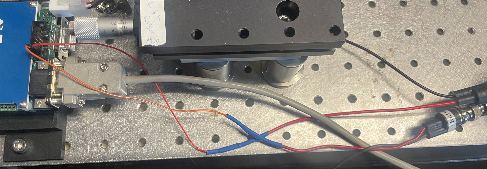
Example of physical wiring between Tiger controller and servo amplifier.
2. Tiger Controller DAC Settings
The DAC card includes a built-in 5th-order Bessel low-pass filter.
This filter must be enabled to prevent mirror oscillation.
Required Setting
Low-pass filter cutoff frequency: 100 Hz
Apply this setting to:
The Signal axis
The Reference axis
This can be done in the Tiger Control Panel by sending the command B {axis}=0.1 for each axis.
Both channels must use the same cutoff frequency.
This ensures the mirror receives a smooth waveform and prevents excitation of mechanical resonance.
3. Waveform Requirements
The mirror is sensitive to rapid changes in command voltage.
Avoid instantaneous flyback transitions.
Include a short settling period if needed.
If oscillation or blur is observed:
Increase fall time.
Increase settle duration.
Confirm the 100 Hz filter is enabled on both channels.
4. Verification Checklist
Before imaging, confirm:
[ ]
+Cmdand-Cmdwired correctly[ ] Analog ground connected
[ ] 100 Hz filter enabled on both DAC channels
[ ] No instantaneous flyback transitions
5. Notes
The system is sensitive to waveform shape.
Even small changes in transition timing can affect image quality.
If modifying scan parameters, re-check stability visually.
If further issues occur, contact the system maintainer before modifying wiring or filter settings.
Tuning Remote Focus Waveform
Within navigate, you are able to generate the remote focus waveform. The fundamental parts of the waveform include the rise time, flyback time, and settling time. The rise time is equivalent to the exposure time. This part must be aligned to the rolling shutter. This is tuned by modifying the amplitude, offset, and remote focus and camera delays. The flyback time is the time for the mirror to return to the original position in order to be at the bottom of the shutter for the next image. This is followed by the settling time to allow the mirror to settle before the next image. Both the flyback and settling time must be long enough to ensure the mirror is not oscillating during the next exposure. This oscillation leads to a laser warble when looking at the beam, and image blur when viewing the sample.
To accurately tune the amplitude, offset, and delay values, follow the following steps:
- 1. Find the center of the camera FOV
An offset of about 5V with the Altair setup should bring the center of the focus to the center of the camera FOV.
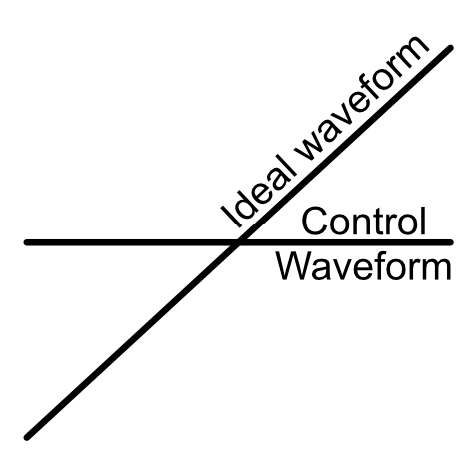 Aligning waveform center |
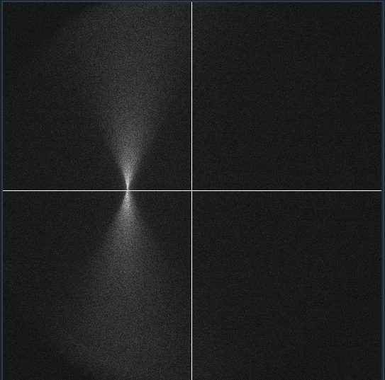 Corresponding beam image (beam focus in center of camera FOV) |
{kind=link}
{kind=link}
- 2. Tune the amplitude to align with the rolling shutter
Gradually increase the amplitude until the laser line is straight across the camera FOV. An amplitude of about 0.5 V aligns with the rolling shutter of the Hamamatsu Orca Flash. This value will change based on the camera used, exposure time, and number of pixels (scan width). If the amplitude moves the thinnest part of the beam away from the center, the delay can be adjusted to move it back to the center.
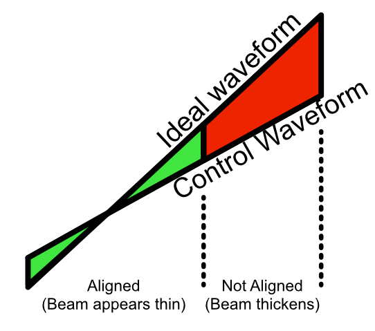 Aligning waveform amplitude. |
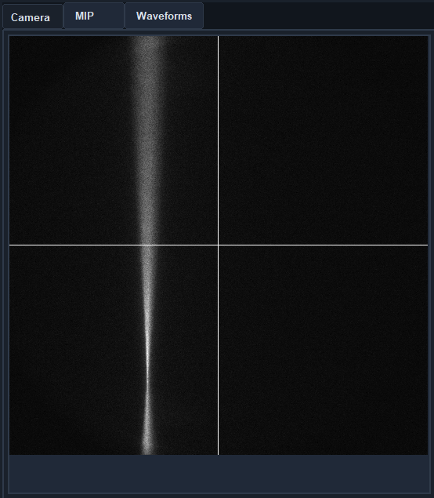 Corresponding beam image |
{kind=link}
{kind=link}
- 3. Tune the delay values.
There is an ideal waveform. The amplitude will adjust the slope and create a parallel waveform, and the offset and delay values will shift the waveform vertically and horizontally respectively. If the thinnest part of the beam is below the center of the camera FOV (as shown above), decreasing the remote focus delay will bring the thinnest part of the beam up. If the remote focus delay reaches 0 ms, then the camera delay can be increased, essentially acting as a negative remote focus delay.
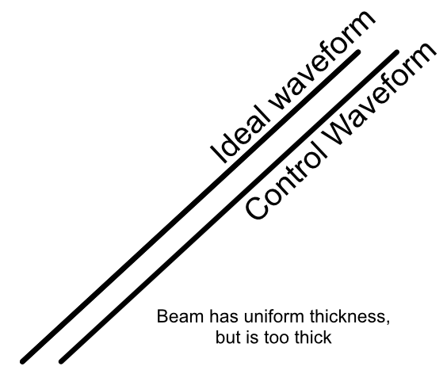 Example of waveform that needs delay tuning. |
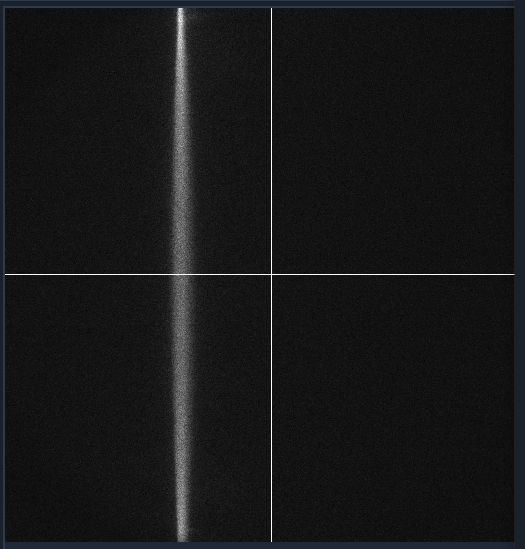 Corresponding beam image. |
{kind=link}
{kind=link}
Detection Path Assembly
Our detection path consists of our Nikon N25X-APO-MP detection objective, Hamamatsu ORCA Flash4.0 V3 Camera, ASI C60-TUBE-400 tube lens, and ASI FW-0002-8 8-position filter wheel unit. These components are mounted together and affixed onto an ASI LS-100-AMCCH translation stage for focus control. We currently use a prototype detection path baseplate (available here) as a mounting stage for these elements and the sample chamber; however, this additional baseplate is still undergoing design iterations and is not critical for a functional detection path.
We utilize two additional custom adapter elements in the construction of the detection path: a shell casing around the tube lens that mounts to the translation stage and an adapter for the translation stage to mount it to an optical breadboard table. The height thicknesses of these elements were chosen such that the height of the detection objective center should match that of the illumination objective (which with the 1.5” tall posts our illumination baseplate rests on is 4.75” above the optical table surface). These elements can be custom machined if desired; however, we have found 3D printed PLA variants to perform their functions effectively as well.
The assembly of the detection path begins with the translation stage and its associated breadboard adapter (available here in two variants, based on whether or not one is using the 0.5” thick detection path baseplate):
Turn the translation stage upside-down
Place the breadboard adapter upside-down on top of the inverted translation stage (such that the raised platform of the adapter is touching the bottom side of the translation stage)
Align the recesses on the bottom of the adapter with the holes on the bottom of the translation stage
Fix the adapter onto the translation stage by screwing M6 screws into the recesses aligned with the translation stage holes.

Figure 7: Schematic of the translation stage breadboard adapter
The next step is flipping the translation stage assembly right side up again, and then fixing the first of two halves of the tube lens adapter onto the top of the translation stage:
Place the tube lens adapter half onto the top of the translation stage such that the block with two sets of five recessed holes is touching the top of the translation stage.
Align the recess holes on the adapter with the holes on the top of the translation stage.
Fix the adapter onto the translation stage by screwing M6 screws into the aligned recess holes

Figure 8: Schematic of the tube lens to translation stage adapter
Next, we’ll focus on assembling the tube lens and filter wheel:
Take the MIM to Filter wheel adapter and fix it onto the front port of the filter wheel using the associated screw ports
With the adapter fixed, now screw the 400 mm tube lens into the adapter.

Figure 9: Schematic of the filter wheel port for the tube lens
- In order to fix our detection objective onto the tube lens, we must first prepare an extension and threading adapter:
Take the C60-EXT-15 15 mm Tube extension piece and place the RAO-0051 M32x0.75 threaded sleeve inside
Using the screws on the top of the extension piece, fix the threaded sleeve in place
Insert/screw the extension piece into the front of the tube lens.

Figure 10: Showcase of the screws used to secure the thread adapter for the tube lens
- The tube lens assembly is now ready to be fixed onto the translation stage assembly:
Place the tube lens assembly such that the tube lens lies within the curved region of the tube lens adapter
While there isn’t an exact science to the relative placement of the tube within the adapter, try to position it such that more of the tube is extended out on the side where the objective will be mounted (our setup is shown below for reference).
Place the second half of the tube lens adapter such that the curved side fits onto the tube lens and position it such that the holes of both halves of the adapter align with each other.
Using your choice of either M6 or 1/4”-20 screws and associated washers/nuts, place the screws with a washer placed on them first into the aligned holes of the adapter. We used 4 of the adapter holes on each side, but more can be used for extra security if desired.
Screw a washer onto each of the screws until they’re secured against the bottom lip of the adapter.

Figure 11: Example of tube lens mounted in the corresponding adapter
The detection path assembly can now be fixed into place onto either the detection path baseplate or the optical table. Keep in mind this process is meant to place the unit roughly where it should be; finer adjustments will be made afterwards:
Using the mounting holes on the translation stage assembly, place the assembly such that the edge of the translation stage adapter facing the illumination path is roughly 9-10” away from the location of the illumination objective.
Using the adjacent edge of the translation stage adapter (the one that should be perpendicular to the orientation of the illumination path), try to align the side of the adapter with the mounting hole of the illumination objective.
Screw the translation stage adapter into either the optical table or the detection path baseplate (we recommend using Thorlabs 1” Spacers in place of washers here).

Figure 12: Setup for securing the translation stage to breadboard adapter onto our detection path baseplate
- With the assembly fixed in place, the camera can then be screwed into the filter wheel:
Align the front thread of the camera with the back port of the filter wheel
Screw the camera into the filter wheel until there is resistance
Slowly adjust the camera tilt until the top surface is leveled (we use a bubble leveling tool for this, shown below)

Figure 13: Mounting of the camera
The final steps to assemble the detection path are to screw the detection objective into the front of the tube lens and attach all associated wires to the camera, filter wheel, and translation stage. If there’s not enough clearance between the front of the tube lens and the sample chamber to screw in the detection objective, the translation stage might need to be wired up first and translated backwards manually using either navigate or the Tiger Control Panel software.
Assembling the Sample Chamber
In order to ensure a watertight seal around our objectives, both of our objective ports feature two sets of o-rings surrounding their circumference. For our smaller port associated with the TL20X-MPL objective, we use oil-resistant Buna-N O-Rings with 11/16” inner diameter (ID) and 13/16” outer diameter (OD). For the larger port associated with the Nikon 20X objective, we used Buna o-rings with roughly 1.3” ID and 1.7” OD. These o-rings and their associated grooves are first coated with vacuum grease in the following process:
Unscrew vacuum grease container
Using either a finger or a cotton-tipped applicator, apply a layer of vacuum grease into and around the grooves on both ports
Put more vacuum grease on the cotton-tipped applicator
Using a finger or cotton-tipped applicator, take an o-ring and coat it fully in the vacuum grease.
Place the o-ring in the appropriate groove using a finger or tweezers to help ensure it sits within the groove
Repeat steps 3-5 for all 4 o-ring grooves in the chamber

Figure 4: Preparation and Placement of O-rings in the Sample Chamber
Then with the o-rings in place, if you’re using a sample chamber variant that offers two detection path configurations (traditional orthogonal and transmissive), install a gasket and gasket retainer on the transmissive port:
Cut a gasket sheet into a roughly 2x1.5” rectangle gasket section.
Place the gasket onto the gasket retainer, poke a marker through the 4 holes on the gasket retainer to mark where the screw holes will be.
Use scissors or another tool to make cuts at each of the 4 marked locations on the gasket, such that a 4-40” screw is able to pass through them.
Align the gasket over the gasket retainer and place 4 4-40” screws into each of the holes such that the threading pokes out from the gasket side.
Align the gasket assembly screws with the sample chamber transmissive port threaded holes, fully screw in the screws into the sample chamber holes.
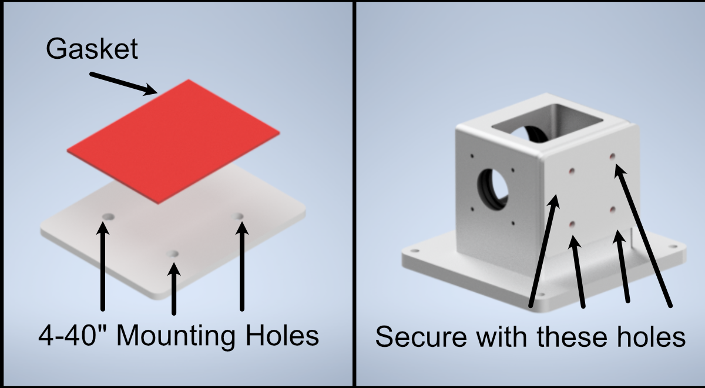
Figure 4: Preparation and Placement of the gasket and gasket retainer on the sample chamber
Now fix 4 2.5” posts onto the corresponding holes on the detection path baseplate, and then secure the sample chamber onto those posts using the four 8-32” holes on the base of the sample chamber.
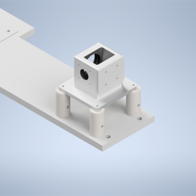
Figure 4: Placement of sample chamber assembly onto detection path posts.
Alignment
Alignment Overview
For the second iteration of our Altair baseplate system, the construction and alignment process is more involved than our first iteration, but should still be a straightforward step-by-step process. To make things a little bit easier, the system is first aligned and optimized without the presence of some of the lenses (L1, L2, L3, L4, L5 for the Powell lens configurations), and then the rest of the lenses are added in and the system is recalibrated.
Step 1: Laser Collimation
When first assembling the system, ensuring proper output collimation from the fiber laser source is critical. There are multiple checks that one can take for this step, but we utilize a combination of a shear-plate interferometer and two pinhole apertures placed at opposite ends along the length of the baseplate. Shear-plate interferometers are designed to split and interfere an input beam of coherent light, such that when the beam is collimated there are interference fringes aligned vertically with a reference line. The fiber laser collimator we used for this system is the Thorlabs CFC11A-A, which features an adjustable barrel which controls the position of collimation optics within the element.
The basic assembly process involves first inserting and fixing the CFC11A-A into a Thorlabs AD15S2 adapter, which allows it to then be mounted into a 2.5” Polaris K1XY mount. This assembly is then mounted onto the respective Polaris post at the start of the baseplate. The fiber laser source is then able to be directly mounted into the CFC11A-A, making sure that the protrusion on the fiber wire aligns with the open section of the CFC11A-A port. The basic process of ensuring collimation then involves turning on the laser source, and placing the shear-plate interferometer such that the input port aligns with the output of the laser unit. Then, by slowly adjusting the barrel of the CFC11A-A and observing the interference fringe orientations along the top display of the interferometer, one is able to adjust the beam until it is properly collimated.

Figure 1: Shear Plate interferometer and collimator lens
Step 2: Beam Walking 1
Section Goal: Ensure that the beam is traveling parallel to the baseplate surface and through the center of all mounted elements up to the RFO location (part 1).
With the beam properly collimated, we can begin the series of steps to walk the beam such that it is both centered on all of our optical elements as well as runs parallel to the surface of the baseplate. Then place one 2.5” Polaris post at these three locations: the hole corresponding to the Powell lens, the hole corresponding to L4, and the hole corresponding to the remote focus objective (RFO) location. Then place 1XY mounts on each of those 2.5” Polaris Posts . Then screw SM1-threaded adjustable irises (SM1D12) into those 1XY Mounts. Then place a 1” mirror in a Polaris B1F mount and mount it on a 3” optical post in the 45 degree oriented mounting position on the board as shown in the image below. With the irises and mirror in place, this step becomes an iterative process of adjusting the XY and tip/tilt of the laser K1XY mount until the beam passes through the center of all irises and roughly onto the center of the mirror. As a general direction, starting with the irises opened more and then steadily closing them further as you refine the tip/tilt and XY of the K1XY is recommended. If adjusting the tip/tilt of the K1XY becomes a bit overwhelming, it might be helpful to screw all of the tip/tilt knobs on the mount fully in, such that the starting point that you’re working from is roughly flat (perpendicular to the surface of the baseplate).

Figure 2: Beam Walking 1
Step 3: Beam Walking 2
Section Goal: Ensure that the beam is centered on the galvo and K1S4 mirror, and that it travels parallel to the baseplate surface and through the center of all mounted elements up to the RFO location (part 2).
Next, assemble and add in the resonant galvo and the K1S4 mirror directly underneath it. Then replace the post of the 45 degree B1F mirror to be 2” instead of 3”. Then place two 1XY mounts on 1.5” posts, one at the location of the RFO and one at the location of L5. Then place and screw in the PY004 onto the baseplate and then mount the voicecoil adapter on top as shown below (have graphic that shows the location of the voicecoil mount on the PY004). Then mount the voicecoil (Link assembling voicecoil section) onto the adapter, making sure the side with the mirror is facing towards the beam path. The iteration flow here will be to adjust the tilt of the resonant galvo until the beam is centered on the K1S4 mirror underneath it, and then adjust the tip/tilt of the K1S4 mirror until the beam is centered on the B1F mirror and the two irises after. Then adjust the tip/tilt on the PY004 of the voicecoil until the back-reflected beam spot passes through the irises on its return path.

Figure 3: Beam Walking 2
Step 4: Beam Walking 3
Section Goal: Place the beamsplitter in the system, ensure it’s oriented correctly.
Assemble the beamsplitter, its mount, and the 1.75” Polaris post it rests on, and mount it on its corresponding hole (show the orientation of the beamsplitter). Ensure that the beamsplitter is oriented such that the beam passes through both sides (you can use pinholes or irises for this step; they should screw into the SM1 threading on the beamsplitter).

Figure 4: Beam Walking 3
Step 5: Optional Beamsplitter Alignment
Section Goal: Use the alternative laser launch hole to ensure that the test beam goes straight through the beamsplitter return path to the center of the ILO.
Mount three Polaris 1XY units on 1.5” posts along the return path at the location of L6, L7, and the illumination objective (ILO), respectively. Then mount a 1.5” post and Polaris 1XY unit on the hole denoted for the alternative laser launch. Screw the laser (Thorlabs CPS532) into the Polaris 1XY mount. With each of the 1XY Mounts roughly centered in both X and Y, ensure that the laser beam passes through the center of all elements using a frosted pinhole or iris installed in them.

Figure 5: Beamsplitter Alignment
Step 6: Beam Walking 4
Section Goal: Install polarizers and ensure that the beam is traveling properly on its return path through the beamsplitter.
Start by threading an LRM1 rotation mount into both the side of the beamsplitter facing the RFO and the side opposite facing L5. Then thread the half-waveplate into the L5 side and the quarter-waveplate into the RFO side.
Rotate the half-waveplate to make the beam as bright as possible in the direction of the RFO, then adjust the quarter-waveplate to make the beam as bright as possible on the return path in the direction of the ILO.
Ensure that the return beam properly travels back through the beamsplitter and down the path to the ILO. Adjust tip/tilt of voicecoil mirror to manipulate the direction of the beam.
This establishes a ground-truth beam position for the next step where we add in the RFO.

Figure 6: Beam Walking 4
Step 7: Beam Walking 5
Section Goal: Add in RFO, do initial alignment.
Add the RFO back in, then adjust the XY on the RFO mount until the back reflections from the RFO are aligned (same method: put a pinhole card behind the RFO and center the pinhole on the beam).

Figure 7: Beam Walking 5
Step 8: RFO Offset
Section Goal: Install L6 and L7, Adjust the RFO offset in navigate such that it’s collimated between the beamsplitter and L6 and L7 and the ILO.
Start by installing SM1A2 threading adapters onto the Polaris 1XY mounts corresponding to L6 and L7. Then thread both L6 and L7 into their respective mounts, such that the Thorlabs label on them is on the side farthest away from the 1XY mounts, shown above in the “Breakdown of Baseplate Holes” section.
With a shear-plate interferometer placed between the beamsplitter and L6 (and then L7 and the ILO), adjust the RFO offset in navigate (leaving the amplitude at 0 for now) until the light between the beamsplitter and L6 and L7 and the ILO is collimated. The available range should be between 1 to 10, with the optimal value varying for each system, for our initial system this value was around 5.

Figure 8: The Waveform Parameters panel in navigate.
Step 9: Add In Lenses
Section Goal: Add in the rest of the non-Powell lenses into the illumination path.
Install L2, L3, L4, and L5 into their respective B1S holders, and then screw those holders into the correct positions.
If the beam is no longer centered on the RFO, remove the RFO from the path and focus on adjusting the tip/tilt of the voicecoil mirror so the return beam is centered on both the first tube-lens mount after the beamsplitter on the return path and the ILO objective mount (using irises or frosted pinholes).
Add the RFO back in, then adjust the XY on the RFO mount until the back reflections from the RFO are aligned (same method: put a pinhole card behind the RFO and center the pinhole on the beam).
Then add in TL1 and TL2, adjust the rotation and XY of TL2 to center the beam on the ILO again, use a shear plate, and change VC offset to re-collimate the beam. Using the re-collimated offset position as the baseline, adjust the detection path (ensuring it is as perpendicular as possible to the illumination path), and primarily adjust TL1 and TL2 XY to center the beam as much as possible on the back of the ILO.
Step 10: Install Detection Path
Section Goal: Assemble/incorporate detection path into the setup, ensure it’s centered on the beam by using the chamber filled with water and fluorescein.
First assemble the detection path.
Step 11: Optimize System Light-Sheet Performance
Section Goal: Optimize navigate parameters and XY offsets of RFO, L6, L7, and ILO to verify the system is working.
This section is focused on two main objectives: 1. Verify that the focus remains sharp as you manually adjust the voicecoil offset to scan your focus across your camera FoV 2. Tune your navigate waveform parameters to ensure that your beam is being scanned properly by your generated waveform.
For objective 1, with the detection path installed and the beam roughly centered vertically, adjust the VC offset manually until the beam looks like it reaches the top and bottom edges of the image FoV. In the optimized system, as you manually change the offset your beam focus should stay sharp and not shift horizontally across the screen.
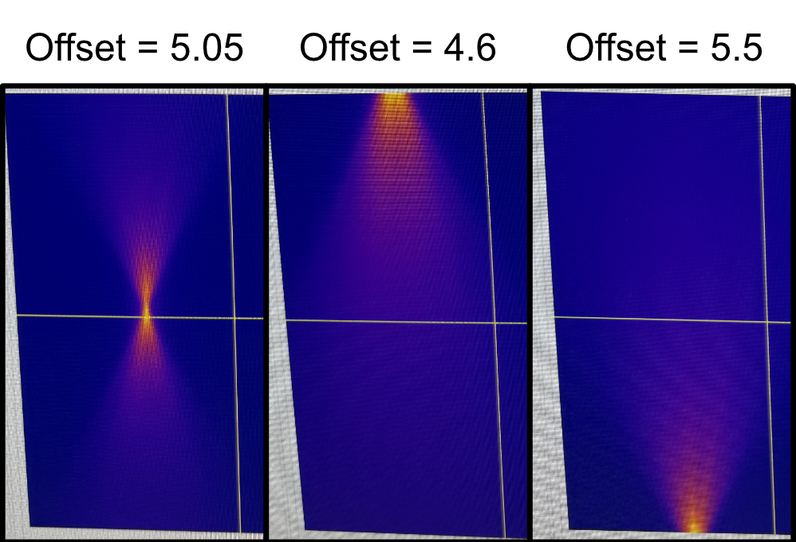
Figure 9: Manually changing the voicecoil offset to scan the beam across the image FoV.
If either of these aren’t true, there’s likely an element in the optical assembly that needs to be adjusted. It’s difficult to provide a precise prescription of steps to take as each system will be different, but here are some sanity checks or steps that can be helpful with figuring out the ideal alignment:
As you scan the beam back and forth, observe the top-down shape of the beam in the chamber by eye. Make sure that it looks symmetrical in profile (i.e. it’s not slanted towards either side). If it is, you might need to adjust the horizontal positioning of L6, L7, and the ILO relative to one another.
You can use the threaded irises used in the other alignment steps on L6 and L7 to ensure that the beam is passing through the center of these elements. When stopping down the beam centered on L6, the beam coming out of the ILO should also look like it’s coming from the center and going in a straight line, not tilted in any particular direction. If not, adjust the XY offsets of L6 and L7 until everything is centered even with a stopped down beam.
If you want, in waveform parameters you can give the system a little bit of amplitude (anywhere from 0.4 to 1) briefly. It’s difficult to describe, but as the circular beam spot is pulsing on L6, L7 and the back pupil of the ILO it should look like it’s pulsing radially outwards equally in all directions. If it looks like the pulsing movement is biased towards any direction in particular (i.e. it looks like it extends further in one direction than others as the beam spot pulses), then it’s likely that you’ll need to adjust the XY offset of L6 and L7 to make the beam pulse radially. When it looks good, just remove the amplitude again until the next steps.
There’s also the potential that your detection path isn’t exactly orthogonal to your illumination objective if with the prior suggestions your beam still isn’t looking as expected. Re-adjusting your detection path position and going through the previous suggestions again can help hone in on the proper orientation.
When your beam profile looks sharp and fixed horizontally as it’s scanned vertically across your FoV, you can move forward with optimizing the rest of your waveform parameters.
Step 12: Add in Powell Lens
Section Goal: Incorporate Powell Lens, do a final fine-tuning alignment of system elements.
With your system producing a uniform-looking beam profile across your FoV, you can now move forward with incorporating the Powell lens into the optical path. Screw the AD9F mount with the Powell lens inside it into the LRM1 assembly.
This step is most easily accomplished through imaging a fluorescent collagen sample, but theoretically can be done with fluorescent beads in agarose as well.
With a fluorescent collagen sample in, the alignment process is straightforward:
Move your collagen sample such that it’s in your beam path and present in your FoV.
Remove any amplitude on your waveform parameter and run a normal-mode continuous scan. You want to rotate your Powell lens until you essentially see a horizontal region in your FoV that looks consistently in/out of focus. You can adjust your focus position as well during this step. Your end goal should be producing a horizontal region of your sample that looks consistently in-focus.
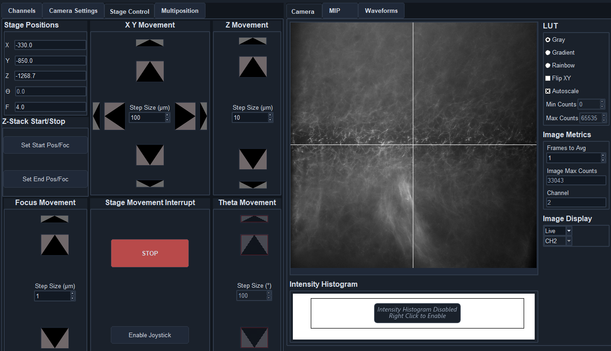
Figure 10: How the image should look in normal mode for a properly oriented Powell lens.
Stop the continuous mode acquisition and switch to light-sheet mode (we set the number of pixels parameter to be 5 for most of our imaging cases), then start the continuous mode acquisition again.
Now adjust the amplitude and delay of your waveform parameters until the entire FoV of your image looks in focus and crisp.
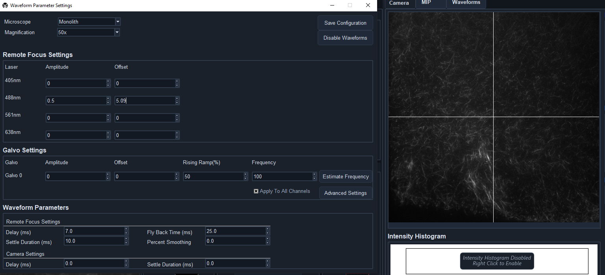
Figure 11: When your waveform is optimized, your image should look in focus across the full FoV.
With that, your system should be aligned, optimized, and ready to image actual samples!
Troubleshooting
Optimizing Lens Placement/Orientation Using Backreflections
Optimizing Powell Lens Placement
The placement of the Powell lens in the optical path takes a bit of fine-tuning compared to some of the other lenses in our system. The lens itself is particularly sensitive to displacements in x and y, where if it’s off it is easily visible in the profile of the beam on the front surfaces of the lenses that follow. Using the beam profile on the front of L2 as an example, when the Powell lens has a vertical (y) displacement, the beam profile starts to take on more of the conical shape instead of the more rectangular or pill-shaped profile from our simulations.
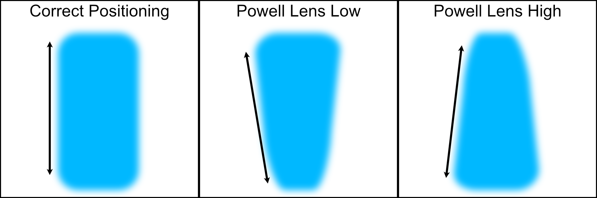
Figure 1: Potential misaligned Powell lens beam profiles on the front surface of L2
In addition, due to tolerances with the Powell lenses we use in simulation compared to the physical ones purchased, there can be an additional z offset needed between the Powell lens and L2 for the beam profile to match simulations. In our particular case, we found that having an additional 2.6 mm spacing between the Powell lens and L2 made the rest of the system follow closely with our simulations, but this value might be different for different Powell lenses. We found this optimized spacing value by observing the beam profile on the front of L2 and L4, comparing it to simulated profiles in the same locations, and iteratively adjusting the LNR25M dial until the profiles matched closely.
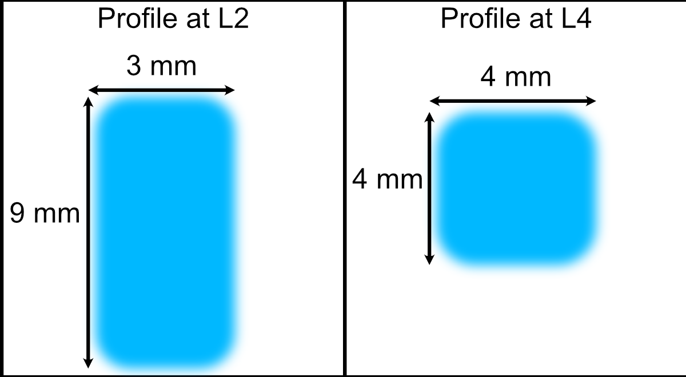
Figure 2: Example profiles at L2 and L4 front surfaces used to optimize z-displacement of L1